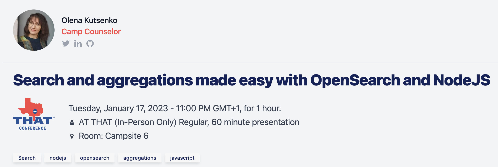
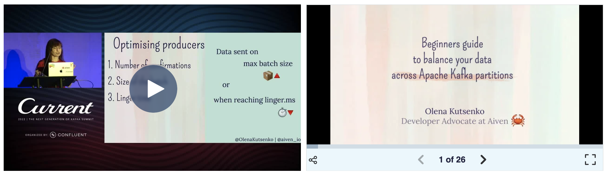
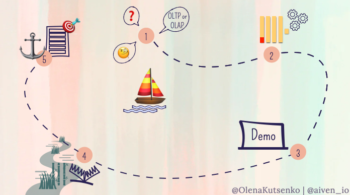
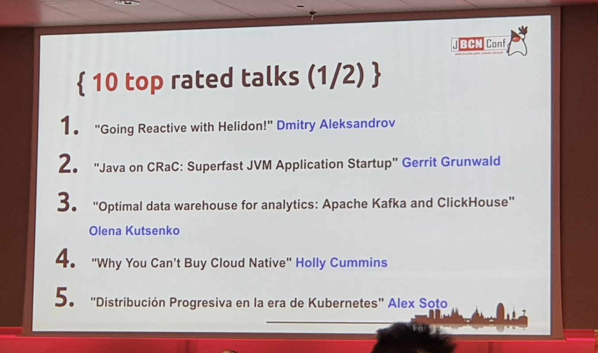
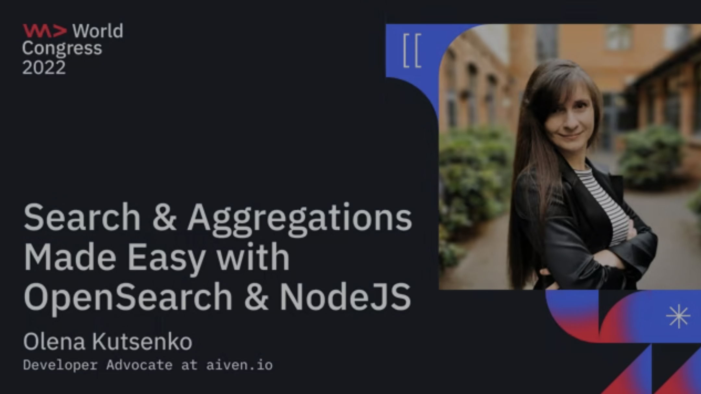

Public speaking activity
January 17, 2023
THAT Conference TX, Austin, USA
Search and aggregations made easy with OpenSearch and NodeJS
 :
Learn how to search, aggregate and visualise your data.
First, we'll pretend to be food critics and explore 20K recipes. Next we'll connect OpenSearch to Mastodon public feed (with a bit of Apache Kafka help) to have a glimpse of what people are discussing on the social network!
December 7, 2022
DevRelCon Prague, Prague, Czech Republic
Using science to calm your nerves before public speaking
Video is awaiting publication.
DevRel, and in particular Developer Advocates, are known for their excellent public speaking skills, looking very relaxed on stage, talking smoothly on camera, and exerting a high level of calmness in front of large audiences.
But does it mean that those speakers are born that way? Definitely not! In fact, anxiety of public speaking is part of almost all of us, ranging from tolerable nervousness to paralysing fear.
Spoiler alert: as long as we care about our topic and our audience, nervousness never completely goes away. However, controlling public speaking fear is a skill that we can learn.
November 15, 2022
ClickHouse: what is behind the fastest columnar database
OSA CON 2022, Online
A columnar database ClickHouse is in many ways exceptional - it is exceptionally fast and exceptionally efficient, but also, at times, exceptionally confusing.
To get the most out of ClickHouse and avoid pitfalls, we'll talk about OLAP and architecture of columnar databases. We'll touch topics of storage, compression, indexing, searching. We'll look at reasons behind the most puzzling concepts of ClickHouse, so that by the end of the talk you find them not only logical, but maybe even fascinating.
October 5, 2022
Current 2022. Austin, USA
Balance Your Data Across Apache Kafka Partitions
You can watch the full talk on the Confluent website: 
Apache Kafka is a distributed system. At the heart of Apache Kafka is a set of brokers, which allow to store the records persistently across different topics. Topics, in turn, are split into partitions. Dividing topics into such pieces allows us to use data from multiple partitions in parallel, so that producers and consumers can work with data simultaneously and achieve higher data throughput.
Such parallelisation is the key to a performant cluster, however it comes with a price. The thing is, reading from multiple partitions will eventually mess up the order of records, meaning that the resulting order will be different from when the data was pushed into the cluster.
This happens because when consuming data from multiple partitions, the order of partitions is not guaranteed. Instead, we must rely on the order of the records within a single partition, where the data is guaranteed to maintain the original sequence. We need to use this characteristic of Apache Kafka to our advantage in those cases where the ordering of the records is important for our system.
Therefore, when building our product architecture we should carefully weigh up how we will balance records across partitions and what mechanisms we will use to ensure that the sequence of the messages remains correct when data is read by multiple consumers.
In this talk we'll discuss mechanisms you can use to balance your data, such as keys, composite message key, role of hashing, custom partitions and other things you need to keep in mind when splitting data across partitions.
If you are fresh to Apache Kafka, or you're looking for good practices to design your topics and avoid common pitfalls, you'll find this session useful!
September 15, 2022
Uptime 2022. Amsterdam, Netherlands
ClickHouse: what is behind the fastest columnar database. Or how to make it click!

You can watch the full talk on YouTube.
A columnar database ClickHouse is in many ways exceptional - it is exceptionally fast, exceptionally efficient, but also, exceptionally confusing.
It's approach to handling data goes against principles we use in other databases: its primary index doesn't index each row and doesn't guarantee uniqueness; a secondary index doesn't point to specific rows; JOIN to be avoided and transactions do not exist.
But if used correctly, ClickHouse is a superb solution for online analytical processing.
The goal of this talk is to help you get the most of ClickHouse and avoid pitfalls. We'll talk about analytics, columnar databases and sparse indexing. We'll look at the most puzzling concepts of ClickHouse, so that by the end of the talk you find them not only logical, but maybe even fascinating.
August 12, 2022
London Java Community, Online
Apache Kafka simply explained
I bet almost everyone heard about Apache Kafka. So many companies use it with a big community built around this open-source distributed event streaming technology.
However, the first steps in Apache Kafka are usually not easy. The complexity and vastness of the platform makes it heard to grasp. Those who know this technology well when explaining it tend to use complex jargon and plenty of confusing terminology. This puts newcomers away and creates unnecessary frustration.
Let me explain Apache Kafka in a friendly, entertaining and enjoyable way. Because. after all, this technology is super cool!
July 18, 2022
JBCNConf, Barcelona, Spain
Optimal Data Warehouse for analytics: Apache Kafka and ClickHouse

Apache Kafka is amazing at handling real-time data feeds. However, in certain cases we need to come back to older records to analyse and process data at later times. This is challenging because storing records indefinitely and doing large scans of data in Apache Kafka is not optimal.
ClickHouse, on the other hand, is a scalable and reliable storage solution designed to handle petabytes of data and, at the same time, a powerful open-source tool for fast online analytical processing, used by many companies for data analytics. What's more ClickHouse has a built-in table engine to publish and subscribe to Apache Kafka data feeds.
Combining Apache Kafka and ClickHouse allows us to transition older records to a data warehouse in order to perform analytics at scale on top of the fresh data that Kafka provides.
In this talk you’ll learn how to use Apache Kafka together with ClickHouse and how to query the data stored in the data warehouse. This session is for those who want to perform analytics with fast response time over huge volumes of data without the need to downsample it.
June 28, 2022
Data + AI Summit, San Francisco, USA
Search and Aggregations Made Easy with OpenSearch and NodeJS
In this session the audience will get both theoretical and practical knowledge on what OpenSearch is and how they can work with it by using its NodeJS client. This is a hands-on session where the audience is invited to follow along.
June 15, 2022
WeAreDevelopers World Congress 2022, Berlin, Gemany
Search and Aggregations Made Easy with OpenSearch and NodeJS

You can watch the full talk on wearedevelopers platform/.
In this session the audience will get both theoretical and practical knowledge on what OpenSearch is and how they can work with it by using its NodeJS client. This is a hands-on session where the audience is invited to follow along.
June 13, 2022
Berlin Buzzwords, Berlin, Gemany
Search and Aggregations Made Easy with OpenSearch and NodeJS
You’re curious about what Apache Kafka does and how it works, but between the terminology and explanations that seem to start at a complex level, it's been difficult to embark. This session is different. We'll talk about what Kafka is, what it does and how it works in simple terms with easy to understand and funny examples that you can share later at a dinner table with your family.
This session is for curious minds, who might have never worked with distributed streaming systems before, or are beginners to event streaming applications.
But let simplicity not deceive you - by the end of the session you’ll be equipped to create your own Apache Kafka event stream!
May 12, 2022
Devoxx UK, London, UK
Optimal Data Lake for analytics: Apache Kafka and ClickHouse
Apache Kafka is amazing at handling real-time data feeds. However, in certain cases we need to come back to older records to analyse and process data at later times. This is challenging because storing records indefinitely and doing large scans of data in Apache Kafka is not optimal.
ClickHouse, on the other hand, is a scalable and reliable storage designed to handle petabytes of data and, at the same time, it is a powerful open-source tool for fast online analytical processing. It was initially developed by Yandex and is now used by many companies for data analytics. What's more ClickHouse has a built-in table engine to publish and subscribe to Apache Kafka data feeds.
Hence, we can use Apache Kafka and ClickHouse in collaboration to transition older records to a data lake in order to perform analytics at scale on top of fresh data that Kafka provides.
In this talk you’ll learn how to use Apache Kafka together with ClickHouse and how to query the data stored in the data lake. This session is for those who want to perform analytics with fast response time over a huge volume of data without the need to downsample it.
May 5, 2022
EDA Summit, Online
Apache Kafka, Simply Explained
You’re curious about what Apache Kafka does and how it works, but between the terminology and explanations that seem to start at a complex level, it's been difficult to embark. This session is different. Software Engineer Olena Kutsenko will talk about what Kafka is, what it does, and how it works in simple terms with easy to understand and funny examples that you can share later at a dinner table with your family.
This session is for curious minds, who might have never worked with distributed streaming systems before, or are beginners to event streaming applications. But don't let simplicity deceive you - by the end of the session you’ll be equipped to create your own Apache Kafka event stream!
April 12, 2022
Devnexus 2022, Altanta, US
Apache Kafka, Simply Explained
Learn Apache Kafka in uncomplicated and entertaining terms and get equipped with practical knowledge for your first steps in the Apache Kafka world.
February 5, 2022
FOSDEM 2022, Online
Search and aggregations made easy with NodeJS and OpenSearch
You can watch the full talk on FOSDEM platform.
Learn how OpenSearch works and get equipped with practical knowledge to search, aggregate and visualise your data.
This is a hands-on session where we will use JavaScript to interact with the OpenSearch cluster - create an index, add documents, search and aggregate data. At the end we’ll visualise results with OpenSearch Dashboards.
February 5, 2022
FOSDEM 2022, Online
Build an Open Source Streaming Data Pipeline
You can watch the full talk on FOSDEM platform.
Any conversation about Big Data would be incomplete without talking about Apache Kafka and Apache Flink: the winning open source combination for high-volume streaming data pipelines.
In this talk we'll explore how moving from long running batches to streaming data changes the game completely. We'll show how to build a streaming data pipeline, starting with Apache Kafka for storing and transmitting high throughput and low latency messages. Then we'll add Apache Flink, a distributed stateful compute engine, to create complex streaming transformations using familiar SQL statements.
This session is aimed at data professionals, who are ready to embrace open source streaming and make their data fly.
February 5, 2022
FOSDEM 2022, Online
Low-code data visualization and aggregation with OpenSearch Dashboards
You can watch the full talk on FOSDEM platform.
Working with Big Data means that we need tools to organise and understand the data. And you don’t have to be a developer to search, aggregate and visualise your data. Whether you need an affordable business analytics tool or you want to analyse log data in near real time, OpenSearch can help you. And all of it through a visual interface of OpenSearch Dashboards.
After listening to this talk you’ll understand the basics of working with an OpenSearch cluster and different use cases it supports. You’ll also learn to create your first search and aggregation query and visualise the outcomes with the help of OpenSearch Dashboards.
This talk is for those who have little or no previous experience of OpenSearch (and Elasticsearch) and who are looking for solutions for searching, monitoring or data analysis with no coding required.
In this session the audience will get theoretical and a knowledge on what OpenSearch is, which use cases it supports and how the audience can start using it for their data already today. Roles outside of developers are welcome, the information will be presented in uncomplicated terms and we’ll use visualisation tools to create and run requests, so no coding is required.